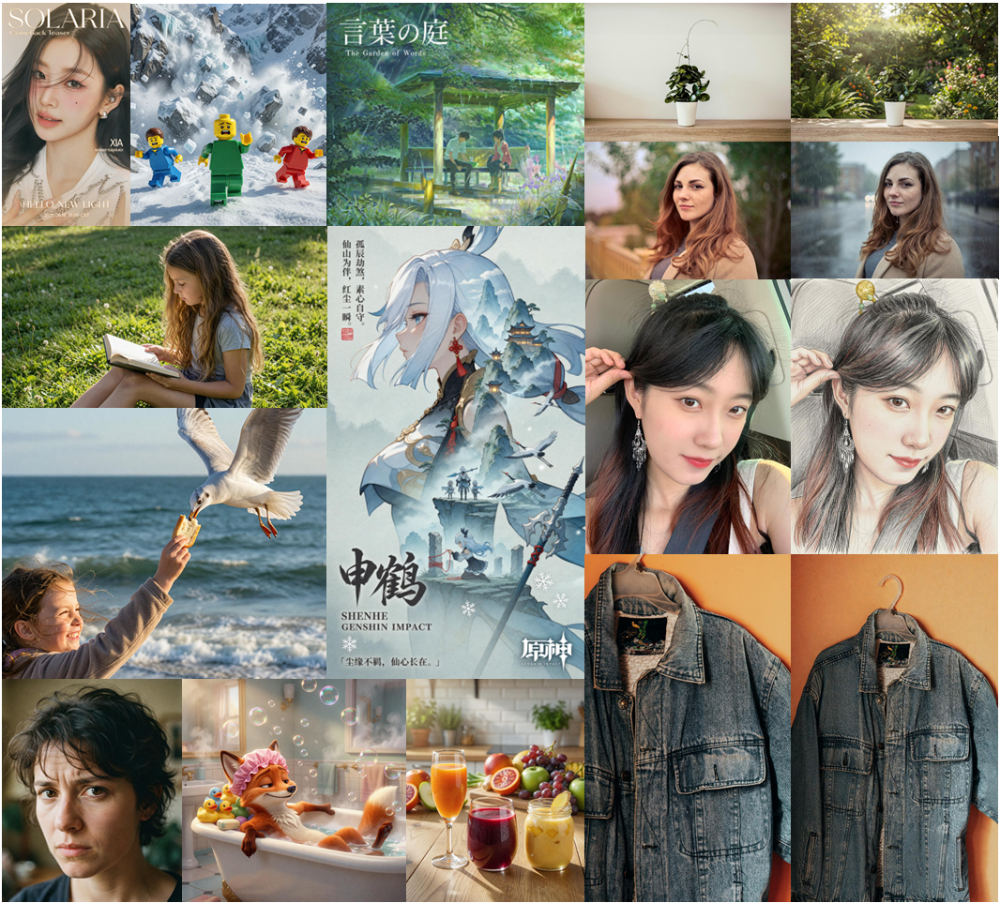

Qwen-Image-Flash: Rethinking the Training Recipe for Few-Step Distillation
A systematic study of data composition, teacher guidance, and generation–editing task mixtures for few-step DMD, leading to unified image generation and editing in four steps.